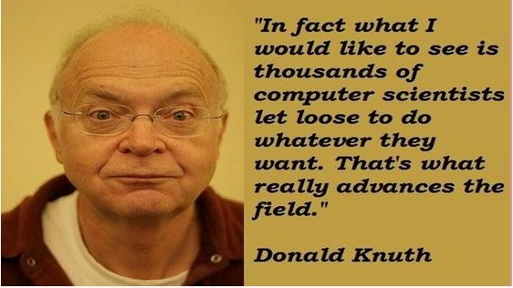

いわゆるプログラマーとは、コンピュータプログラムを創造し、作成することができる人々のことである。どんなプログラマーであれ、多かれ少なかれ、彼は私たちの社会に何かを貢献している。しかし、一部のプログラマーの貢献は、一般の人が一生のうちに捧げることができる力を超えている。これらのプログラマーは先駆者であり、尊敬を受けている。彼らが貢献したものは、私たち人類の文明の全過程を変えたのである。それでは、人類史上最も偉大な12人のプログラマーを見てみよう。
1、最初のコンピュータプログラマー：エイダ・ラブレスAda Lovelace

エイダ・ラブレス、旧名オーガスタ・エイダ・バイロンは、イギリスの有名な詩人バイロンの娘である。数学愛好家であり、後世の人々によって最初のコンピュータプログラマーとして広く認められている。
1842年から1843年にかけて、エイダは9か月を費やして、イタリアの数学者ルイージ・メナブレアがチャールズ・バベッジのコンピュータ解析機関について説明した論文を翻訳した。訳文の後に、彼女はその機械を使ってベルヌーイ数を計算する方法を詳述した多くの注記を追加し、これは世界初のコンピュータプログラムと見なされている。したがって、エイダは世界初のプログラマーであるとも考えられている。ただし、伝記作家の中には、プログラムの一部がバベッジ自身によって書かれたため、エイダのコンピュータプログラムにおける独創性を疑問視する者もいる。
エイダの論文は、バベッジも言及しなかった多くの新しい構想を生み出した。例えば、エイダはかつてこう予言した。「この機械は将来、組版や編曲、あるいは様々なより複雑な用途に使用できるだろう。」
1852年、エイダは子宮頸がんの治療のため、結果的に出血多量で亡くなった。わずか36歳だった。彼女の死後100年が経った1953年、エイダがかつてチャールズ・バベッジの『解析機関概論』に関して残したノートが再公開され、現代のコンピュータとソフトウェア工学に大きな影響を与えたと考えられている。
2、Pascalの父：ニクラウス・ヴィルトNiklaus Wirth

ニクラウス・エミール・ヴィルトは、スイスのヴィンタートゥール生まれのスイス人コンピュータ科学者である。
1963年から1967年まで、彼はスタンフォード大学の計算機科学部の助教授となり、その後チューリッヒ大学でも同じ職に就いた。1968年、彼はチューリッヒ工科大学（ETHチューリッヒ）の情報学教授となり、さらにゼロックス・パロアルト研究所で2年間研鑽を積んだ。
彼はAlgol W、Modula、Pascal、Modula-2、Oberonなど、いくつかのプログラミング言語の主設計者である。
彼はまたEuler言語の発明者の一人でもある。1984年、彼はこれらの言語を発展させた功績によりチューリング賞を受賞した。彼はまたLilithコンピュータとOberonシステムの設計および運用チームの重要なメンバーでもあった。
彼の論文「Program Development by Stepwise Refinement」はソフトウェア工学における古典的名著と見なされている。彼が書いた本のタイトル「Algorithms + Data Structures = Programs」（アルゴリズム＋データ構造＝プログラム）はコンピュータ科学の名言である。
3、マイクロソフト創業者：ビル・ゲイツBill Gates

ウィリアム・ヘンリー・"ビル"・ゲイツ三世は、アメリカの著名な実業家、投資家、ソフトウェアエンジニア、慈善家である。若い頃、彼はポール・アレンと共にマイクロソフト社を設立し、マイクロソフトの会長、CEO、筆頭ソフトウェア設計者を務め、会社の普通株式の8%以上を保有し、会社最大の個人株主でもあった。
4、Javaの父：ジェームズ・ゴスリンJames Gosling

ジェームズ・ゴスリンは、カナダ生まれのソフトウェア専門家であり、Javaプログラミング言語の共同創始者の一人で、一般的に「Javaの父」として認められている。
彼は12歳の時には、すでに電子ゲーム機を設計することができ、隣人のコンバインの修理を手伝っていた。大学時代は天文学科でプログラミング開発のアルバイトをしていた。1977年にカナダのカルガリー大学でコンピュータ科学の学士号を取得した。1981年にはUnix上で動作するEmacs系エディタ「Gosling Emacs」を開発した（C言語で記述され、拡張言語としてMocklispを使用）。1983年にアメリカのカーネギーメロン大学でコンピュータ科学の博士号を取得した。博士論文のテーマは「The Algebraic Manipulation of Constraints」である。卒業後はIBMに勤め、IBM第一世代ワークステーションのNeWSシステムを設計したが、あまり重視されなかった。その後、Sun社に転じた。1990年、Patrick NaughtonやMike Sheridanらと共に「グリーンプロジェクト」に取り組み、後に「Oak」と呼ばれる言語を開発し、その後Javaと改名された。1994年末、James Goslingはシリコンバレーで開催された「テクノロジー・教育・デザイン会議」でJavaプログラムを披露した。2000年、Javaは世界で最も人気のあるコンピュータ言語となった。
5、Pythonの父：グイド・ヴァンロッサムGuido van Rossum

グイド・ヴァンロッサムはオランダ人のコンピュータプログラマーであり、Pythonプログラミング言語の作者として広く知られている。Pythonコミュニティでは、グイド・ヴァンロッサムは「慈悲深き終身の独裁者（BDFL）」と見なされている。つまり、彼は今でもPythonの開発プロセスに関心を持ち続け、必要な時には決定を下すということである。
2002年、ベルギーのブリュッセルで開催された自由及びオープンソースソフトウェア開発者欧州会議において、グイド・ヴァンロッサムはフリーソフトウェア財団から2001年フリーソフトウェア進歩賞を授与された。2003年5月、グイドはオランダUNIXユーザーグループ賞を受賞した。2006年、彼は米国コンピュータ協会（ACM）によって著名エンジニアとして認定された。
6、B言語、C言語とUnixの創始者：ケン・トンプソンKen Thompson

ケネス・レーン・トンプソン、通称ケン・トンプソンは、アメリカのニューオーリンズ生まれの計算機科学者でありソフトウェアエンジニアである。彼はデニス・リッチーと共にB言語とC言語を設計し、UnixとPlan 9オペレーティングシステムを創設した。彼はまたプログラミング言語Goの共同著者でもある。デニス・リッチーと共に1983年のチューリング賞受賞者である。
ケン・トンプソンの貢献には、正規表現の開発、初期のコンピュータテキストエディタQEDとedの作成、UTF-8エンコーディングの定義、そしてコンピュータチェスの発展も含まれる。
7、現代コンピュータ科学の先駆者：ドナルド・クヌースDonald Knuth

ドナルド・アーヴィン・クヌースは、アメリカのミルウォーキー生まれの著名なコンピュータ科学者であり、スタンフォード大学コンピュータ科学科の名誉教授である。クヌース教授は現代コンピュータ科学の先駆者であり、アルゴリズム解析の分野を創設し、理論計算機科学のいくつかの分野において基盤となる貢献をした。コンピュータ科学および数学の分野で広く影響力のある多くの論文と著作を発表した。1974年のチューリング賞受賞者である。
クヌースが最もよく知られているのは、『The Art of Computer Programming』の著者であることだ。この本はコンピュータ科学界で最も尊敬されている参考書の一つである。さらに、組版ソフトウェアTEXとフォント設計システムMetafontの発明者でもある。文芸的プログラミング（リテラート・プログラミング）の概念を提唱し、文芸的プログラミングの開発ツールとしてWEBとCWEBソフトウェアを創造した。
8、『Cプログラミング言語』の著者：ブライアン・カーニハンBrian Kernighan

ブライアン・ウィルソン・カーニハンは、カナダのトロント生まれのカナダ人コンピュータ科学者であり、かつてベル研究所に勤め、現在はプリンストン大学教授である。彼はUnixの開発に参加し、AMPLとAWKの共同創造者の一人でもある。
デニス・リッチーと共にC言語の最初の著作『Cプログラミング言語』を執筆した後、彼の名前は広く知られるようになった。彼はまた、Version 7 Unix上のditroffとcronを含む、多くのUnix上のプログラムを作成した。
9、インターネットの父：ティム・バーナーズ＝リーTim Berners-Lee

サー・ティモシー・ジョン・バーナーズ＝リー、愛称ティム・バーナーズ＝リー（Tim Berners-Lee）は、イギリスのコンピュータ科学者である。彼はワールドワイドウェブの発明者であり、マサチューセッツ工科大学（MIT）の教授である。1990年12月25日、ロバート・カイリオーはCERNで彼と共に、インターネットを通じてHTTPプロキシとサーバー間の最初の通信を成功させた。
バーナーズ＝リーは、ワールドワイドウェブの発展に関心を持つ組織として彼が設立した、ワールドワイドウェブコンソーシアム（W3C）の会長である。彼はまたワールドワイドウェブ財団の創設者でもある。バーナーズ＝リーはさらに、マサチューセッツ工科大学コンピュータ科学及び人工知能研究所（CSAIL）の設立会長兼上級研究員である。同時に、バーナーズ＝リーはウェブ科学研究イニシアチブのディレクターである。最後に、彼はマサチューセッツ工科大学集合知センターの諮問委員会メンバーである。
2004年、英国女王エリザベス2世はバーナーズ＝リーに大英帝国勲章ナイト・コマンダーを授与した。2009年4月、米国科学アカデミーの外国人会員に選出された。2012年夏季オリンピックの開会式では、「ワールドワイドウェブの発明者」という栄誉を得た。バーナーズ＝リー自身も開会式に参加し、NeXTコンピュータの前で作業を行った。彼はTwitterで「これはすべての人のためのものだ」というメッセージを投稿し、スタジアム内のLCDライトがすぐにその文字を表示した。
10、C++の父：ビャーネ・ストロヴストルップBjarne Stroustrup

ビャーネ・ストラウストラップは、デンマークのオーフス郡に生まれたコンピュータ科学者で、テキサスA&M大学工学部のコンピュータサイエンス首席教授である。C++プログラミング言語の生みの親として知られ、「C++の父」と呼ばれている。
ストラウストラップ自身の言葉によれば、彼は「C++を発明し、その初期の定義を書き、最初の実装を行った……C++の設計基準を選択・策定し、C++の主要な補助サポート環境を設計し、C++標準委員会の拡張提案を担当した」。また、『C++プログラミング言語』を執筆しており、これは多くの人々にC++の模範的古典と見なされている。現在は第4版（2013年5月19日出版）であり、最新版にはC++11で導入されたいくつかの新機能が含まれている。
11、Linuxの父：リーナス・トーバルズLinus Torvalds

リーナス・ベネディクト・トーバルズは、フィンランドのヘルシンキ市に生まれ、アメリカ国籍を有する。Linuxカーネルの最初の作者であり、その後このオープンソースプロジェクトを立ち上げ、Linuxカーネルの第一アーキテクトおよびプロジェクトコーディネーターを務めている。現代世界で最も有名なコンピュータプログラマー、ハッカーの一人である。また、オープンソースプロジェクトGitを立ち上げ、主要な開発者でもある。
リーナスはネットのメーリングリストでも激しい気性で知られている。例えば、かつてGitをなぜC++で開発しないのかについて人と議論した際、相手と「でたらめ」（原文は "bullshit"）と罵り合った。さらに、OpenBSDチームを「自慰をしている猿の集団」（原文は "OpenBSD crowd is a bunch of masturbating monkeys"）と呼んだこともある。
2012年6月14日、トーバルズはフィンランドのアールト大学が主催したイベントに出席した際、Nvidiaは自分が関わった中で「最悪の会社」（the worst company）であり、「最も厄介な会社」（the worst trouble spot）であると述べた。NvidiaがLinuxプラットフォーム向けにOptimusの公式サポートを一切リリースしていなかったためである。その後、トーバルズは公衆の面前でカメラに向かって中指を立て、「Nvidia、くたばれ！」（So, Nvidia, fuck you!）と言った。
12、C言語とUnixの父：デニス・リッチーDennis Ritchie

デニス・マカリスター・リッチーは、米国ニューヨーク州ブロンクスビル（Bronxville）生まれの著名なアメリカ人コンピュータ科学者であり、C言語や他のプログラミング言語、MulticsやUnixなどのオペレーティングシステムの発展に多大な貢献をした。技術的な議論では、ベル研究所でのユーザー名（username）である「dmr」と呼ばれることがよくある。
デニス・リッチーとケン・トンプソンの二人はC言語を開発し、その後それを使ってUnixオペレーティングシステムを開発した。C言語とUnixはコンピュータ産業史上、重要な地位を占めている。C言語は現在でもソフトウェアやオペレーティングシステムの開発において非常に頻繁に使われており、またC++、C#、Objective-C、Java、JavaScriptなど多くの現代的なプログラミング言語にも大きな影響を与えている。一方、オペレーティングシステムの面でもUnixの影響は大きい。今日の市場にはUnixから派生したオペレーティングシステムが多数存在し（AIXやSystem Vなど）、また多くのシステム（一般にUnix系システムと呼ばれる）がUnixの設計思想を取り入れている（Solaris、Mac OS X、BSD、Minix、Linuxなど）。さらに、Microsoft WindowsオペレーティングシステムでUnixと競争しているマイクロソフトでさえ、自社のユーザーと開発者にUnix互換のツールとC言語コンパイラを提供している。
出典：http://www.vaikan.com/12-greatest-programmers-of-all-time/
クリックしてノートを共有
<p style="font-size:14px;">ノートは本記事の内容の拡張である必要があります！</p><br> <p style="font-size:12px;"><a href="../tougao.html" target="_blank">記事投稿は、ここをクリック</a></p> <p style="font-size:14px;"><a href="./runoob-user-test-intro.html" target="_blank">登録招待コードの取得方法</a></p> <h3 class="text-muted"><i class="fa fa-info-circle" aria-hidden="true"></i> ノートを共有する前に<a href=".." class="runoob-pop">ログイン</a>が必要です！</h3> <p><a href="./runoob-user-test-intro.html" target="_blank">登録招待コードの取得方法</a></p>